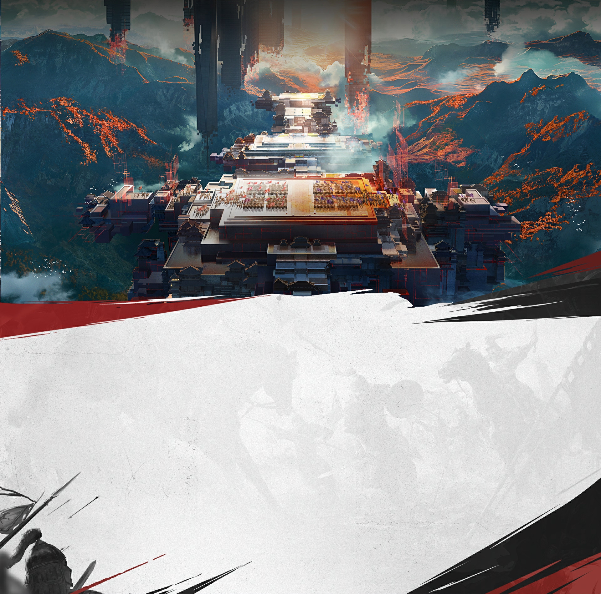
INFINITE BORDERS
率土之滨
STRATEGY & COMMAND
地图指挥与任务协作
围绕 SLG 的日常决策与同盟协作，将筛选、计划和指挥连成一组直接操作。
画线指挥与分组任务
路线承载意图，分组明确对象。将指挥从文字说明带回地图，让任务与战场位置保持关联。
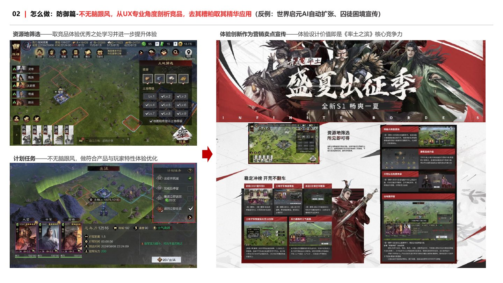
设计过程与原稿
2025.11《重点项目与业务》第 4–8 页；《G10UX环节月度汇报2024-08-19》第 8 页；战略地图 PDF 与编辑器设计稿。
ACCESSIBILITY / ORIENTATION
横竖屏适配与无障碍
横屏承载沉浸式战场操作，竖屏适应单手与碎片化场景。横竖屏切换是这套无障碍设计的核心。
单手操作与布局适配
根据自然握机热区重新组织高频操作。主界面、列表、分栏与场景界面采用不同的适配规则，而非把横版界面直接压缩。
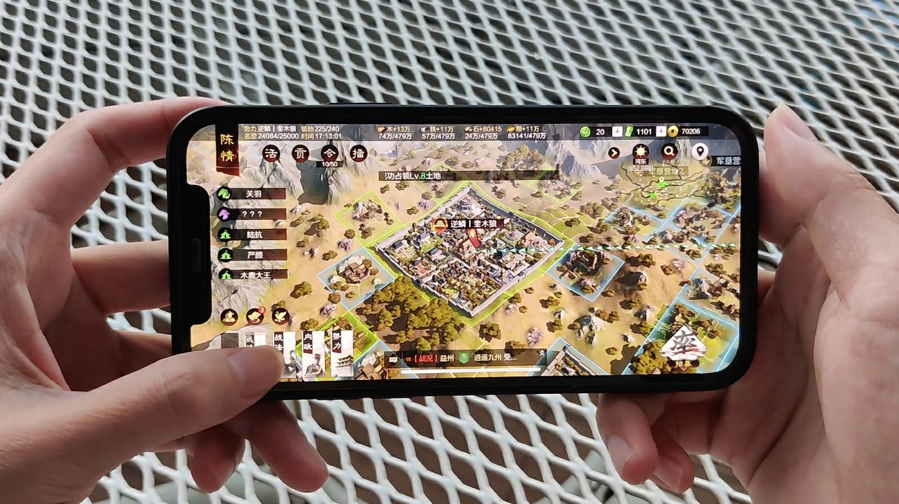
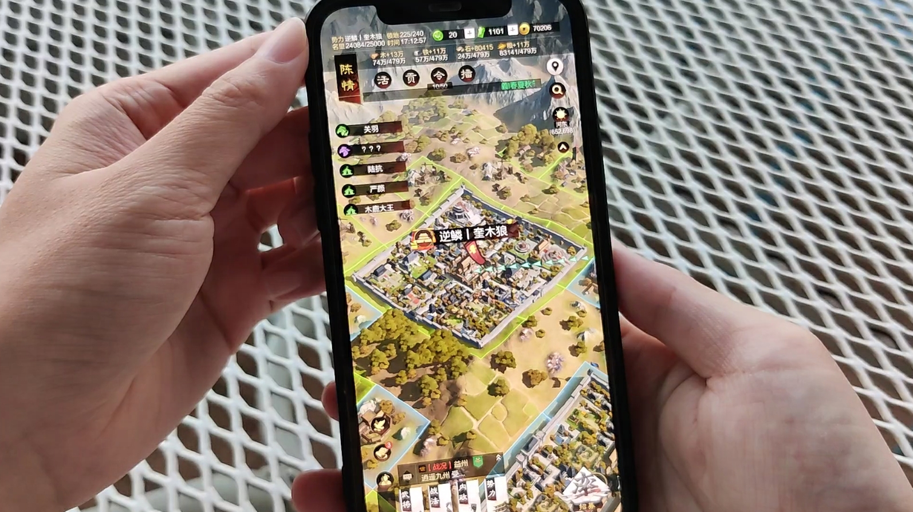
按界面类型转换
九宫、拉伸、分栏与差异布局，让不同功能保持自身的操作逻辑。
同一资源，两种布局
主副工程与布局配置协同，减少双套界面维护的负担。
4.6 / 5 满意度
无障碍专项汇报记录的横竖屏玩家满意度；与色彩模式分开统计。
色彩、关怀与适老模式
色彩模式与关怀模式进一步覆盖不同人群的使用需求。
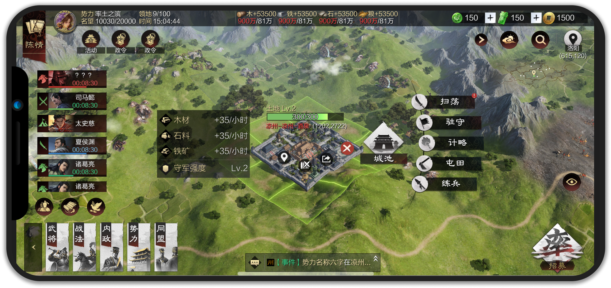
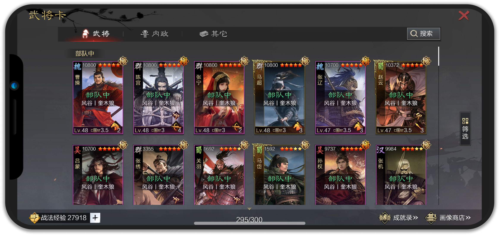
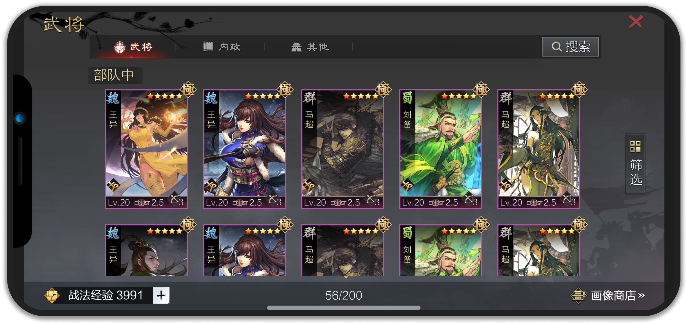
字号与信息密度
从信息密度到文字尺寸，将不同使用需求落实为可切换的界面，而不是额外的操作负担。
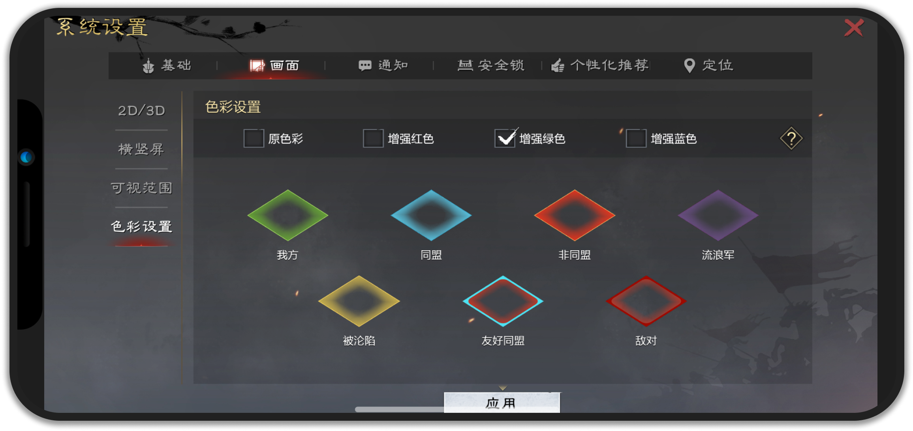
设计过程与原稿
2025.11《重点项目与业务》第 13–15 页；原作品集《率土之滨》无障碍设计 PDF；无障碍模式 V4 第 7、15、17–19 页及参奖材料。
GAME CARTOGRAPHY
游戏地图学
将地图学的比例尺、信息认知与制图综合引入 SLG，连接局部操作、战术判断和全局战略。
六级地图信息框架
原方案从大地图与小地图割裂、过渡层缺失、地编数据不一致等问题出发，建立六级相对比例尺框架。以下展示框架方案；上方视频为另一阶段的缩放演示。
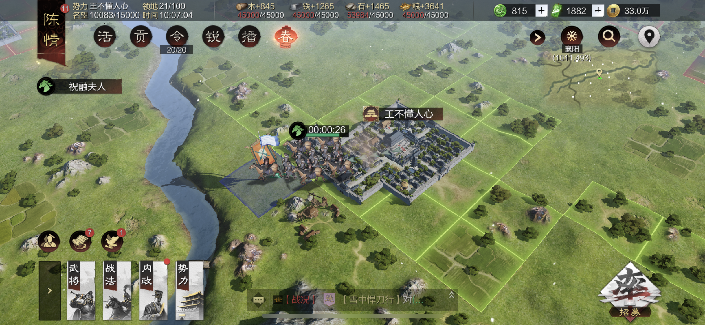
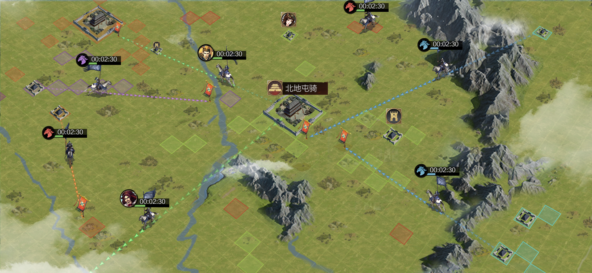
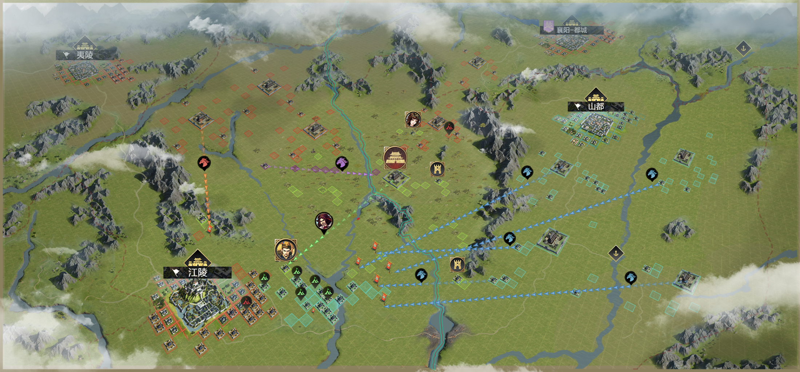
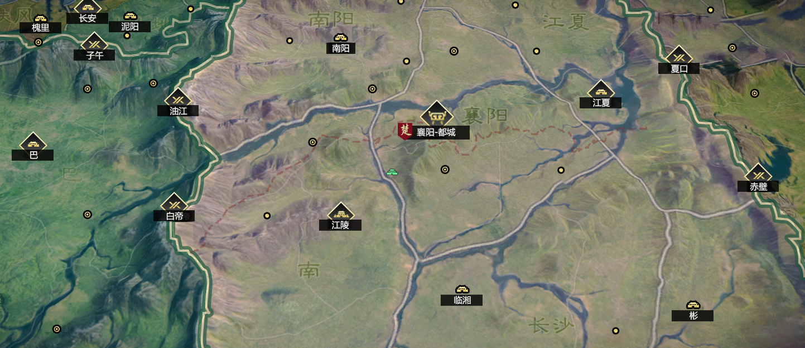
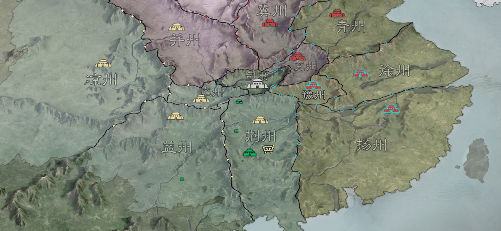
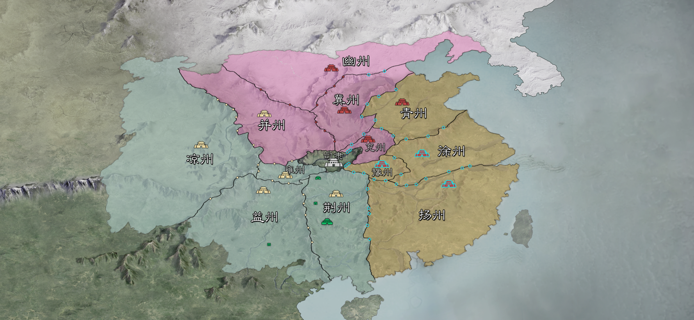
信息具有一致语义
梳理符号、边界与敌我关系，让玩家在不同层级持续读懂同一战场。
重要度决定显隐
结合威胁度、利益相关度与地理尺度，组织战略信息的显示层级。
数据与规范一起校准
补齐中层地图，校对不同层级地编数据，将设计思路沉淀为生产流程。
地图学 · 研究范围与来源
《G10战略地图无极缩放框架方案》第 3—9、14—16 页；《网易-SLG游戏地图学-课题研究2》第 3、6、13—14 页；《无极缩放三期.mp4》。校企合作材料中的论文发表与地图自动生成是规划目标，此处不列为已完成成果。
SYSTEM EXPERIENCE
OS 级交互设计
刚接触率土的玩家，可能连遇到的规则叫什么都不知道。我们在地图边上设计了一个「率」入口，让玩家可以指着画面提问，也可以随时呼出 AI 助手。
哪里不会点哪里
新手求助概念原型
点武将问进阶，点守军问占地
长按「率」，画面变暗，可提问的位置亮起。点武将卡，可以看到进阶所需的同名卡，再点「前往升级」。点城池上方的守军，则会解释驻军、守军和耐久各自怎样影响占地。
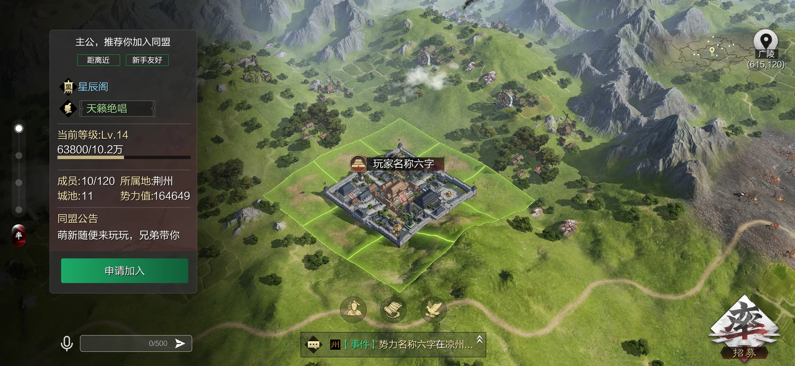
留在地图上找同盟
侧滑「率」唤出 AI 浮窗，底部可以输入问题。以找同盟为例，推荐卡标出「距离近」「新手友好」，并列出所在地、人数和公告。玩家看完就能点「申请加入」。
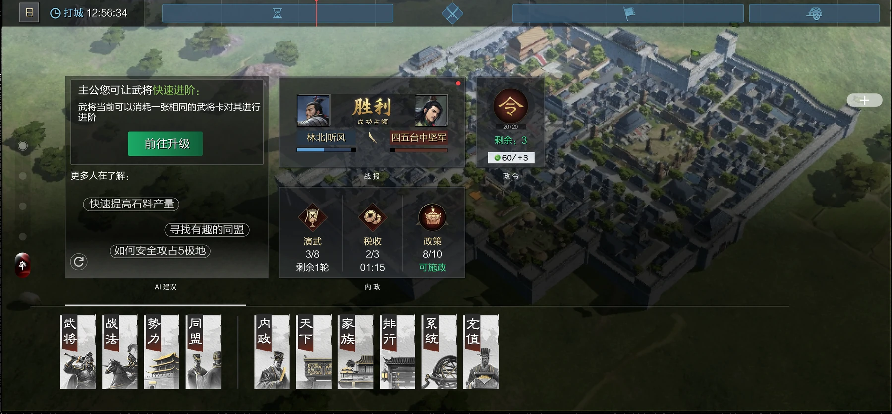
还没想好问什么，也有入口
轻点「率」进入 HOME。当前有可进阶的武将时，首页直接给出升级入口。下面还列出「快速提高石料产量」「如何安全攻占5级地」等新手可以继续追问的问题。
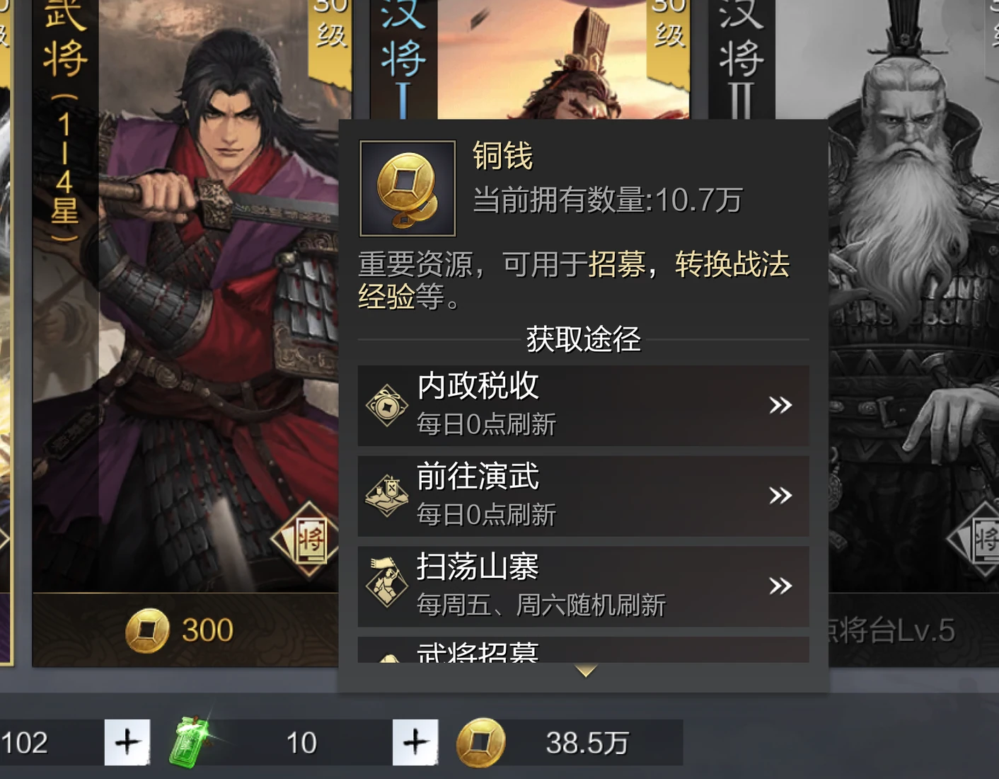
点铜钱，就知道去哪儿拿
在招募界面点铜钱，浮窗会解释它可以用来招募、转换战法经验，并列出内政税收、演武、扫荡山寨等来源。每日或每周的刷新时间就写在对应途径下面。
地图上的情景提示
控制台与分屏原型
控制台与分屏展示连续操作的可能性。以下为概念原型；上方界面来自原作品集记录的前置推进内容。
设计过程与原稿
2025.11《重点项目与业务》第 9–12 页；《G10创新汇报-AI系统化交互体验升级》；《G10率土之滨UI 7.0创新设计进展》第 10、13 页；《G10设计减负-林森调整》。
CROSS-SCENARIO COMMUNITY
游戏内社区
将社区带进游戏，以浮窗、全屏与多端适配连接内容浏览、交流和战场操作。
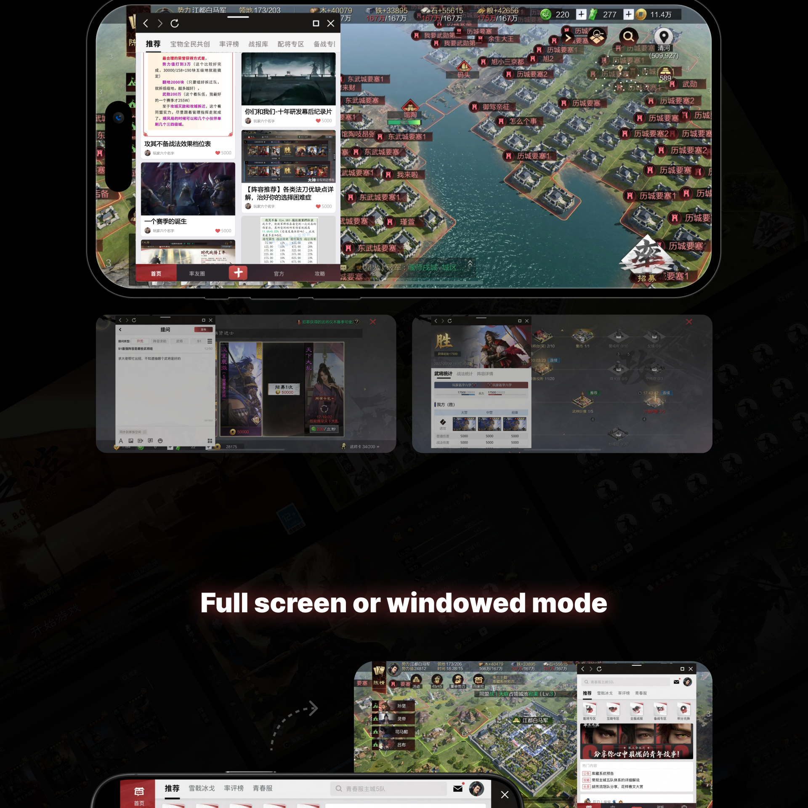
社区悬浮在战场上
查看攻略、浏览内容，同时保留游戏情景。
按任务切换空间
在浮窗与全屏之间组织阅读和交流。
延续同一段参与
连接手机、桌面端与独立社区入口。
设计过程与原稿
2025.06 原作品集「伦敦奖」目录 · 跨场景游戏社交媒体，6 张完整参奖展板；G10 月报中的社区功能与后续跨端需求作为补充，不混淆版本。
VISUAL SYSTEM / 6.0
6.0 视觉体系
将界面布局、武将卡牌、材质与动效统一到 6.0 的视觉体系，并延伸至图标规范与品牌传播。
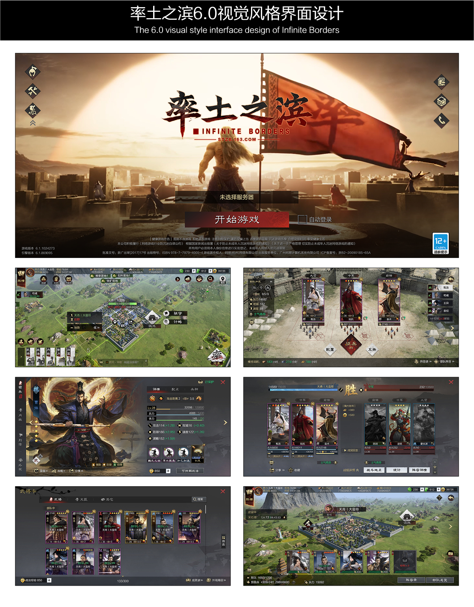
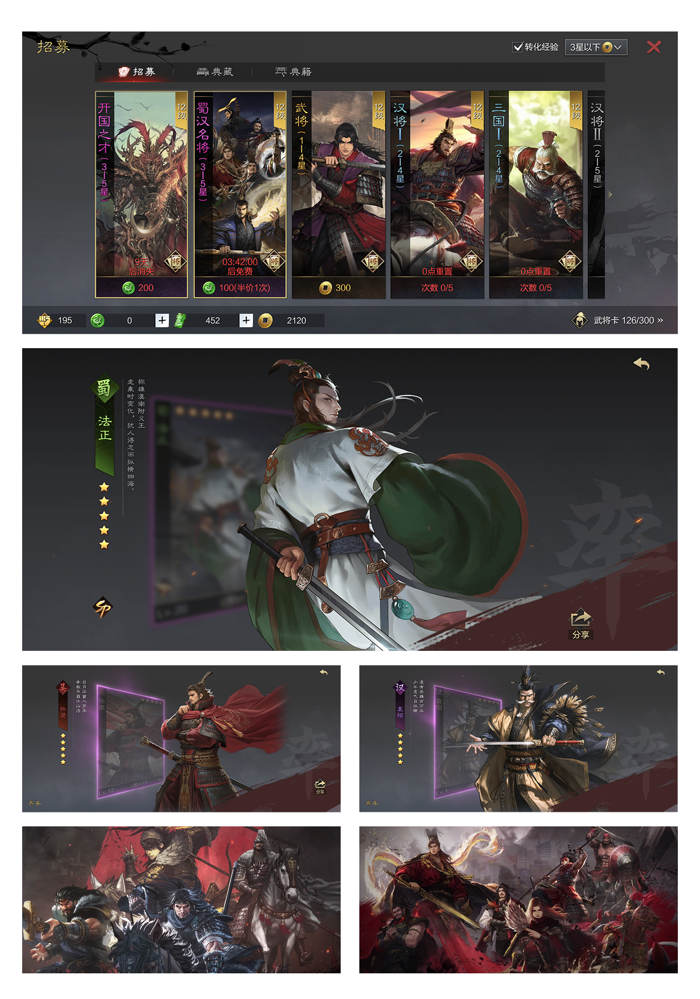
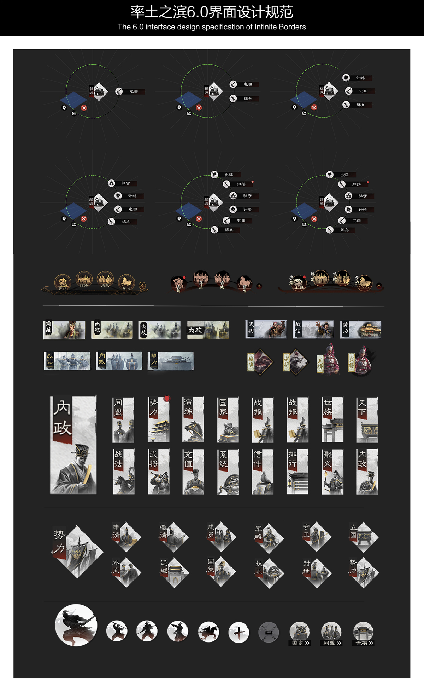
界面与品牌延展
保留国风的辨识度，通过比例、层次和材质组织现代游戏界面，让视觉更新成为系统，而非单张美术表现。
设计过程与原稿
2025.06 原作品集「伦敦奖」目录 · 6.0 UI，6 张完整参奖展板及设计概述；本机另找到 49 页《率土之滨6.0提案》，作为过程材料。
MEMORY & CULTURE
记忆之卷与节气设计
以个人历程回顾和节气主题，组织玩家记录、界面与节日体验。
记忆之卷
将玩家历程转化为可回望、可收藏、可分享的长卷。
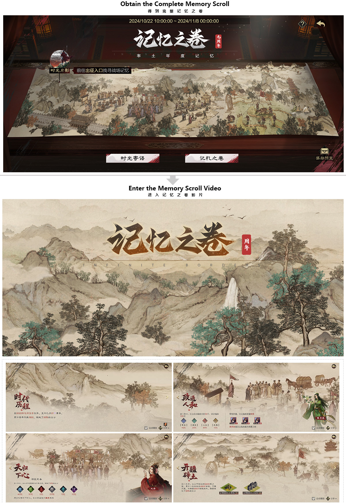
节气与节日体验
以二十四节气、四季界面与节日玩法，让传统文化成为可感知的日常体验。
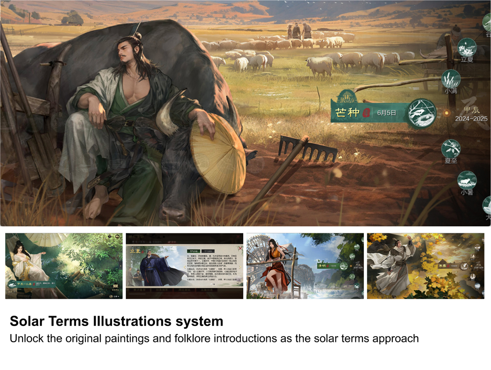
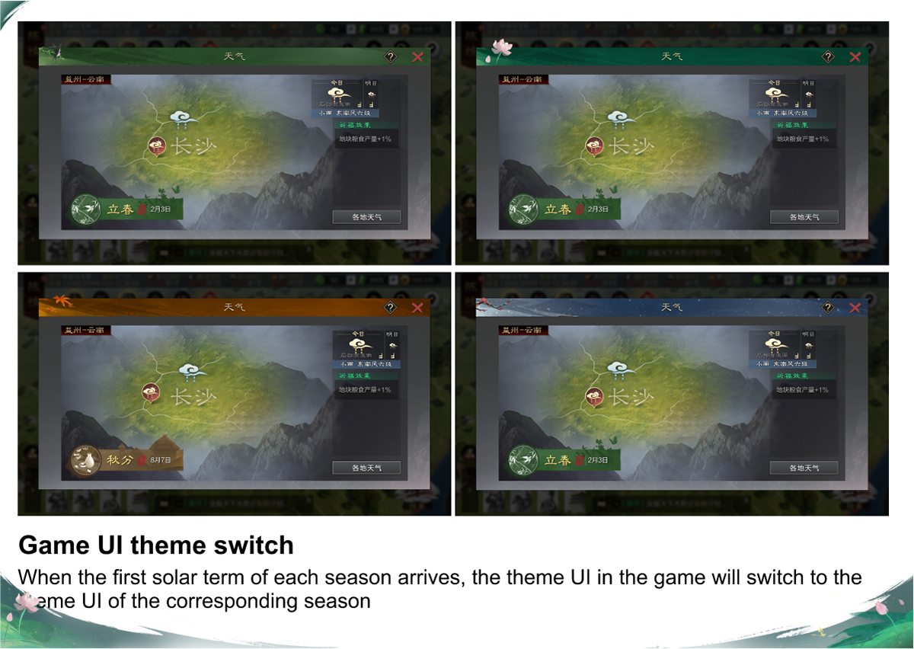
四季界面
四季主题与视觉延展
节气插画、图标与四季主题形成共同的视觉节奏，并延伸到节日玩法、桌面组件和线下活动。
记忆之卷 · 设计过程与原稿
2025.06 原作品集「伦敦奖」目录 · 记忆之卷，4 张完整参奖展板；G10 月报另有系统查找记忆碎片、时光寄语等补充线索。
DESIGN LEADERSHIP
自主迭代与团队管理
通过自主迭代、快速响应和产品对齐，将团队发现的问题转化为可讨论、可预研、可推进的方案。
优化建议
进入预研
明确推进
2024 年汇报中的阶段性记录；“明确推进”不等于“已经上线”。
提案评审与快速响应
自主迭代会推动想法进入讨论，1—2 天的 UX 响应连接开发节奏。画线指挥是原作品集中这套机制对应的具体案例。
管理机制 · 原始记录
《重点项目与业务》第 8 页；《COLOUR-林森-G10体验创意提升产品力》第 6 页。